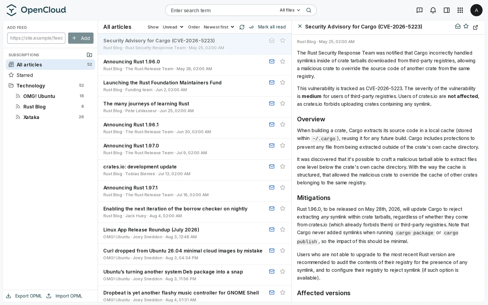

API Nextcloud News v1.3
Implementa la API completa: carpetas, feeds, artículos, estados leído/no leído y destacados. No inventa un protocolo nuevo.
Un lector RSS/Atom compatible con la API de Noticias de Nextcloud. Un único binario en Go, SQLite, sin PHP ni cron por separado.
ocnews sigue los principios del Club Cloudless: software libre, sin nube de terceros, pensado para quien quiere tener el control de sus datos sin montar un centro de datos en casa.
Sin promesas. Cada función está en el código, probada en producción propia.
Implementa la API completa: carpetas, feeds, artículos, estados leído/no leído y destacados. No inventa un protocolo nuevo.
La app Nextcloud News de Android funciona contra ocnews con un token de aplicación de OpenCloud. Sincronización, lectura y podcasts probados.
Un daemon en segundo plano ajusta el intervalo de cada feed: los silenciosos esperan más, los activos se refrescan antes. Con backoff exponencial y jitter.
Imágenes y audio o vídeo de los feeds se sirven con firma HMAC, incluso bajo CSP estrictas. Streaming con Range para poder hacer seek.
Los feeds que solo envían resumen pueden extraer el artículo completo del origen, sanitizarlo y cachearlo. Los que ya traen texto completo se respetan.
Migra tus suscripciones desde cualquier lector compatible. También disponible en la interfaz web para arrastrar y restaurar.
Define reglas por feed sobre título, cuerpo o URL. Los artículos que coinciden se marcan como filtrados y puedes mostrarlos u ocultarlos.
Busca en título, cuerpo o URL dentro de tus feeds. Excluye los artículos filtrados por defecto.
Detecta feeds con audio o vídeo y los agrupa en una sección propia, con reproductor in-app a través del proxy firmado.
Los usuarios se validan contra la Graph API de OpenCloud. No hay otra base de usuarios que mantener ni contraseñas duplicadas.
Cada artículo se limpia con una política blanca al entrar, tanto en la suscripción como en el refresco. Ningún body llega tal cual.
La interfaz y los mensajes de error negocian el idioma por usuario. No depende del idioma del sistema.
Suscríbete a feeds que piden usuario y contraseña. Las credenciales se cifran en el servidor y nunca salen por la API.
Tema claro u oscuro, fuente serif o sans, tamaño y ancho del lector por usuario. Tus preferencias se guardan en tu cuenta.
Purga automática de artículos leídos antiguos, con retención global y excepciones por feed para guardar lo que importa.
Capturas reales de la extensión web. Tema claro y oscuro. Idioma inglés en las imágenes; la interfaz también habla español.

Contrastado contra las fuentes públicas de cada proyecto en agosto de 2026. Sin humo: marcamos lo que ocnews aún no hace.
| Función | ocnews | Nextcloud News | FreshRSS | Miniflux |
|---|---|---|---|---|
| Stack | Go + SQLite | PHP + MariaDB/PostgreSQL + cron | PHP + SQLite/MySQL/PostgreSQL | Go + PostgreSQL |
| Integración OpenCloud | ✓ | No aplica | No aplica | No aplica |
| API Nextcloud News v1.3 | ✓ | ✓ | ◐ API Google Reader | ◐ API Fever / Google Reader |
| App Android oficial | ✓ | ✓ | ◐ apps de terceros | ◐ apps de terceros |
| Extracción de texto completo | ✓ | ✓ | ✓ | ✓ |
| Filtros por palabras clave | ✓ | ✓ | ✓ | ✓ |
| Búsqueda de artículos | ✓ | ✓ | ✓ | ✓ |
| OPML import/export | ✓ | ✓ | ✓ | ✓ |
| Soporte de podcasts | ✓ | ✓ | ✓ | ✓ |
| Extensión web integrada | ✓ | ✓ | ✗ interfaz web propia | ✗ interfaz web propia |
| Multiusuario | ✓ | ✓ | ✓ | ✓ |
| Licencia | AGPL-3.0 | AGPL-3.0 | AGPL-3.0 | Apache-2.0 |
ocnews no sustituye a un ecosistema maduro como FreshRSS ni a la comunidad de Nextcloud. Es un lector enfocado: sirve si ya usas OpenCloud y quieres la menor superficie de ataque posible. No tiene estadísticas de lectura avanzadas, ni themes de comunidad, ni un catálogo de plugins. Si necesitas eso, FreshRSS o Nextcloud News son mejores opciones hoy.
No hay instalador mágico. Compila el binario, configura unas variables y añade una location a nginx.
1. Clona y compila el backend
git clone https://github.com/gnacho/ocnews
cd ocnews/backend
go test ./...
CGO_ENABLED=0 go build -trimpath -ldflags "-s -w" -o ocnews ./cmd/ocnews
2. Configura el entorno
OCNEWS_ADDR=:8094
OCNEWS_DATA_DIR=/var/lib/ocnews
OCNEWS_AUTH_MODE=opencloud
OCNEWS_OPENCOLOUD_URL=https://cloud.example.com
3. Añade la location a nginx
location /index.php/apps/news/ {
proxy_set_header Host $host;
proxy_set_header X-Forwarded-Proto $scheme;
proxy_pass http://127.0.0.1:8094;
}
Para la extensión web, compila extension/ y copia dist/ a la carpeta de apps de OpenCloud. Los detalles completos están en el README del repositorio.
Llevo años usando Nextcloud y me gusta su ecosistema, pero la pila de debajo se fue haciendo demasiado para mi gusto: PHP, servidor web, base de datos, cron y actualizaciones que arrastran medio Composer. Cada máquina en la que lo ponía acababa pareciendo un pequeño centro de datos.
OpenCloud apuesta por lo contrario: todo, incluido lo que Nextcloud hace en PHP, dentro de un único binario en Go. Es más joven, con menos apps y menos madurez, pero la base es prometedora. ocnews es mi primera aportación: mover la experiencia de lector RSS que me importa a OpenCloud sin romper los clientes que ya uso.
Es software libre bajo AGPL-3.0, gratuito y sin nube de terceros. Cada versión se prueba primero en mi propia instancia. Con ayuda o apoyo podría crecer más rápido, pero no puedo prometer nada.
Si te resulta útil, puedes invitarme a un café. No compra características: solo tiempo para seguir puliendo.
Invitar en Ko-fiocnews es un lector RSS/Atom para OpenCloud. Implementa la API de Nextcloud News v1.3, así que la app oficial de Nextcloud News para Android funciona con él, y se sirve como extensión web dentro de la interfaz de OpenCloud.
ocnews es software libre bajo AGPL-3.0. No hay suscripción, ni rastreo, ni componente en la nube.
Sí. Crea un token de aplicación en OpenCloud y configura la app Nextcloud News de Android con la URL de tu servidor, tu usuario y el token.
Un único binario estático en Go, una base de datos SQLite y una ruta de reverse proxy bajo tu dominio de OpenCloud. Sin PHP, sin servidor de base de datos aparte y sin cron.